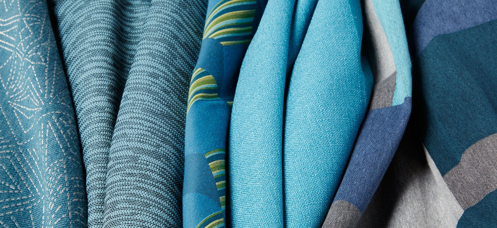

Fabrics

| Fabric Type | Use |
|---|---|
| Cotton Voile | Voile is a lightweight, semi-sheer fabric with a great drape. |
| Cotton Lawn | Lawn is very similar to cotton voile but is slightly crisper. |
| Rayon Challis | Rayon challis is a smooth, lightweight fabric. It drapes well and is slightly heavier than other lightweight fabrics, like cotton voile and cotton lawn. |
| Chambray | Chambray is another smooth, lightweight fabric. It doesn’t drape as well as rayon challis, cotton voile or cotton lawn. |
| Denim | Denim is a heavy-weight fabric with very little drape or stretch. |
| Double Gauze | Double gauze is a unique fabric in that it is literally two layers of gauze woven together. The double layer of fabric eradicates the main problem of sewing clothing from gauze (the sheerness), while retaining the good qualities (extremely light and breathable). |
| Flannel | Flannel is a soft, lightweight fabric. It works well for colder-temperature shirts, pants and jackets. |
| Silk | Silk is a lightweight, delicate fabric that drapes well. It has a slightly shimmery appearance. Silk can be slippery and more difficult to work with. It also makes a great lining fabric. |
| Satin | Satin can vary from lightweight to heavyweight, depending on the type of satin. Like silk, it has a glossy appearance. |
| Linen | Linen is a medium-weight fabric with little elasticity (hence the wrinkles). But it conducts heat very well, which is why it’s a popular choice for warm-weather anything. |
| Wool | There are over 200 different types of wool, coming from 40 different breeds of sheep, so the weight will vary depending on the type of wool. Wool is extremely hard-wearing and versatile. It’s also very warm and a good choice for colder weather garments. |
Needles
| Needle Type | Use |
|---|---|
| Beading | Attaching sequins to fabric; stringing beads for jewelry – necklaces/bracelets/anklets |
| Chenille | Ribbon/yarn/embroidery floss |
| Darning | Mending holes … usually in wool socks, sweaters and jackets |
| Self Threading | General use – seams, hemming, attaching buttons |
| Embroidery | Decorative hand embroidery and crewel stitching |
| Leather | Sewing leather, buckskin and suede |
| Milliners’ | Decorative stitching, pleating and basting |
| Sharps | General sewing, hemming, etc. |
| Carpet Sharps | Working with rugs and carpets |
| Tapestry | Embroidery, needlepoint, decorative stitches on thick or loose weave fabric |
| Upholstery | Tufting; working with thick upholstery fabric; tying off quilts. |
Threads

| Thread Type | Use |
|---|---|
| Polyester | Polyester is your go-to everyday thread, it can be used on a variety of different projects for both hand and machine sewing. Polyester thread has a small amount of ‘give’ and is therefore suitable for use with stretch and knit fabrics. It is strong and durable so can be used on projects that will receive a great deal of wear and tear. It is generally available in the largest colour range. |
| Cotton | Cotton thread is the perfect accompaniment to 100% cotton fabric and is therefore most commonly used in patchwork and quilting. Some sewing purists believe that you should use the same thread as the fabric yarn content, so cotton thread should be used to sew cotton fabric.
Cotton thread has very little ‘give’ and is weaker than other available threads, such as polyester. But it can be perfect for use on lightweight, delicate projects as generally speaking you want the thread to be weaker than the fabric your working with, so any stress on seams causes the thread to break, rather than the fabric to tear. |
| Silk | Silk is a beautiful thread to work with; both on and off the sewing machine. Silk thread is primarily used when hand sewing; finishing hems, basting (tacking), buttonholes and tailoring work. Silk thread is very smooth so it travels through even the lightest most delicate fabrics without leaving a mark, as well as being very strong (especially when used in conjunction with beeswax), it is a superb choice for a large variety of hand sewing projects. |
| Topstitching | Topstitching thread is as the name suggests suitable for topstitching. Although standard thread can be used for topstitching the thicker topstitching thread is perfect for use on heavier weight fabrics and provides a decorative look to stitching. |
| Extra Strong | Although extra strong thread is not suitable for the majority of every day sewing projects it does it have uses. Especially when working with home furnishing projects. The thread is constructed as a thicker, stronger polyester thread that can take a great deal of wear and tear. It is perfect for use on denim, leather and canvas fabrics as well as rugged repair work. |
| Decorative (Metallic and Embroidery) | Metallic and embroidery threads are fabulous for machine or hand embroidery, creating decorative detailing on garments and home decor projects. With a large variety of different threads available and a superb colour range you should be overwhelmed with choice! |
Sew Happy
Hannah
Hancock High School
Exploring Computer Science Pilot Course, 2nd Block
Last Updated: May 2018
https://github.com/hcrawford395/sewhappy/
Sources: Click Here